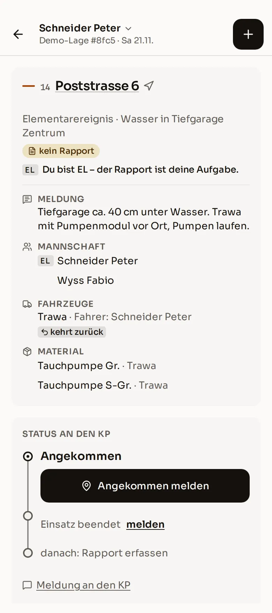

Open source · gratuit · Svizra
La tavla d’acziun per il post da commando.
KP Rück digitalisescha la tavla magnetica dal post da commando posteriur: acziuns, persunal, vehichels e material sin ina tavla – en temp real sin mintga apparat.
Senza conto – tscherner ina rolla e cumenzar


Sviluppà or dal manaschi real d’acziun dals pumpiers d’Oberwil BL – là testà e sviluppà vinavant cuntinuadamain.
La mesira
«Sche la rait croda ora, maina il palpiri»
Ina tavla che daventa naira tar ina panna da current n’è nagin instrument da direcziun. Perquai è integrada ina redundanza sin plirs stgalims – mintga stgalim funcziuna senza quel sura.
Stgalim 1
Plirs apparats adina sincronisads
Tablets, vistas da projectur e telefonins èn colliads en temp real cun la medema tavla. Sche in apparat croda ora u sa blocchescha, cuntinuescha in auter – i na dat nagut da salvar e nagut da registrar pli tard.
Stgalim 2
Ina box da reserva en il magazin
In mini-PC en il magazin reflectescha il board cuntinuadamain. Sche l’internet croda, surpiglia el: il board funcziuna vinavant en la rait locala, cun la charta dal agen server da chartas ed il stampader en la rait locala. Cur che la rait è enavos, vegn quai ch’è vegnì manà là puspè sincronisà.
Stgalim 3
Il palpiri maina
Il stadi da la tavla vegn stampà periodicamain sin il stampader termic, il fegl da situaziun sin squitsch d’in buttun. Sche tut falla, daventa l’ultim fegl la tavla. Suenter il restart transferescha ina persuna las modificaziuns fatgas a maun en l’applicaziun.
Tavla magnetica vi da la paraid
Ina tavla sin mintga apparat.
Las colonnas èn las fasas d’acziun: las cartas passan cun drag-and-drop da sanestra a dretga. Il projectur en il post da commando, il tablet sin maisa ed il telefonin dal fourier mussan il medem stadi – senza actualisaziun manuala.
- Attribuir persunal, vehichels e material – KP Rück avertescha tar attribuziuns dublas
- Tgi che arriva sa registrescha cun in code QR; temps da servetsch e pausas vegnan registrads
- Attribuir cun la tastatura: «14 tlf meier» en la paletta da cumonds
Notizias telefonicas sin fegls
Annunzias colliadas cun l’acziun.
Sur il formular d’annunzia, per telefon u sur l’interfatscha averta dal sistem d’alarm (p. ex. Divera u FireHub). Il sustegn da direcziun surpiglia l’annunzia cun in clic – e quella daventa in’acziun sin la tavla.
- Formular d’annunzia cun link u code QR per telefon e spurtegl, senza conto
- Sch’insatgi annunzia il medem lieu ina segunda giada, dumonda la tavla
- Interfatscha averta – mintga sistem da disposiziun po avrir acziuns
Guglias sin il plan dal vitg
Tgi è nua.
Tut las acziuns sin ina charta, cun posiziuns GPS dals vehichels sco opziun. Cur ch’in vehichel arriva al lieu, propona la tavla la midada da status.
- Tut las acziuns tenor prioritad e status sin ina charta
- Attribuziuns mussadas sco lingias
- Radar da precipitaziuns ed avertiments uffizials (MeteoSvizra, Alertswiss)
Gruppa WhatsApp e messadi da radio
La gruppa annunzia dal telefonin.
Mintga gruppa vesa ses agens lieus d’acziun: arriv, transport, fin da l’acziun – senza radio. La gruppa da reko empla ses formular cun fotografias sin l’agen telefonin; l’annunzia resta colliada cun l’acziun correcta empè da sa perder en in chat da gruppa.
- Vista dal lieu senza conto, cun link e code
- Dumondas – material, rinforz, transport – restan avertas fin ch’il post da commando las ha liquidadas
- Incumbensas: plirs lieus d’acziun sco ina ruta, urden optimà tenor la distanza
Rapport il weekend suenter
Il rapport sa scriva durant l’acziun.
Il diari d’acziun ed ils temps da reacziun vegnan registrads durant l’acziun e daventan in PDF. Correcturas vegnan fatgas cun novas endataziuns; las endataziuns existentas na vegnan betg surscrittas. Uschia resta la notg documentada e verificabla.
- Il diari registrescha sez midadas da status, attribuziuns ed annunzias
- Rapport d’acziun sco PDF cun ils temps da reacziun
- Glista da chaussas avertas: rapports, transports e material al lieu
Manaschi
Vossas datas restan tar vus.
KP Rück è open source e funcziuna en voss magazin u en vossa atgna cloud. Acziuns, persunal, vehichels e material restan sut vossa controlla. Nagins custs da licenza, nagina dependenza d’in producider.
Per empruvar
Clic dubel
Installar Docker Desktop, far in clic dubel sin ina datoteca: il board funcziuna sin il computer en il magazin. La via la pli svelta a las atgnas datas.
Funcziuna era senza internet
Mini-PC en il magazin
Docker Compose sin in pitschen server en l’atgna rait, cun agen server da chartas ed il stampader en la rait locala.
Nagin sto tgirar ina maschina
Hosting
Tar in purschider da hosting da vossa tscherna. Ina box da reserva en il magazin po surpigliar, sche la rait croda.
Sustegn per installaziun e manaschi è pussaivel suenter cunvegna – contact.
Volumen da funcziuns
Tge che fa part.
Il volumen da funcziuns è creschì en eveniments ed exercizis reals e betg sin basa d’ina glista da funcziuns. Tut quai che vegn da servetschs externs – alarmaziun, GPS, stampaders – è opziunal: KP Rück funcziuna cumplettamain era senza questas colliaziuns.
Tavla & disposiziunFasas d’acziun · attribuir · attribuziuns dublas · registraziun QR · temps da servetsch · projectur
- Las colonnas èn las fasas d’acziun – las cartas sa movan cun drag-and-drop da sanestra a dretga
- Attribuir persunal, vehichels e material – e far visiblas attribuziuns dublas, resursas mancantas e cuntradicziuns
- Material al lieu d’acziun cun attribuziun e durada
- Prioritad, durada e termin per mintga acziun
- Reunir pliras acziuns ad ina ruta per ina gruppa ed optimar tenor distanza
- Preparar incumbensas recurrentas
- Registraziun cun code QR
- Temps da servetsch: tgi è qua dapi cura, quant da quel temp en acziun e tgi ha pausa
- Fegl d’acziun cun code QR per gruppas e manischunzs
- Vista da projectur senza elements da cumond per la paraid dal post da commando
- Attribuir cun la tastatura: «14 tlf meier» en la paletta da cumonds attribuescha il TLF e Meier a l’acziun 14 – e scursanidas da tastatura
Alarm & annunziasInterfatscha averta · Divera · FireHub · formular d’annunzia · reko · lieu
- Interfatscha averta per sistems da disposiziun
- Surpigliar alarms da Divera u FireHub opziunal
- Formular d’annunzia accessibel cun link u code QR, per annunzias per telefon u al spurtegl
- Entrada en in pool e surpigliada sco acziun cun in clic
- Annunzias dublas per il medem lieu vegnan renconuschidas; duas acziuns sa laschan unir – cun persunal, reko e rapport – e puspè separar
- Alarmar il persunal directamain da la tavla opziunal
- Sin via: tgi che ha confermà l’alarm da Divera cumpara en la glista da preschientscha – registraziun cun in clic opziunal
- Rapports da reko cun fotografias, colliads cun l’acziun correcta
- Vista dal lieu per gruppas: annunziar arriv, fin, transport e rapports al post da commando – mintga gruppa vesa mo ses agens lieus
- Dumondas dal lieu – material, rinforz, transport – restan avertas tar l’acziun fin ch’il post da commando las ha liquidadas; la gruppa vesa il stadi sin ses telefonin
Charta & vehichelsPrioritads · GPS · attribuziuns · radar ed avertiments · atgnas tegulas
- Tut las acziuns tenor prioritad e status sin ina charta
- Posiziuns GPS dals vehichels opziunal
- Proposta da midada da status cur ch’in vehichel arriva al lieu
- Attribuziuns mussadas sco lingias
- Radar da precipitaziuns da l’ultima ura ed avertiments uffizials (MeteoSvizra, Alertswiss) sin la charta opziunal
- Chartas era dal server local en il magazin
Suenter & manaschiRapport sco PDF · diari · cifras · administraziun · stampa termica · exercizi
- Rapport d’acziun sco PDF cun diari d’acziun e temps da reacziun
- Diari d’acziun sin la tavla: registrescha sez midadas da status, attribuziuns ed annunzias; atgnas endataziuns cun ⇧J – mo cumplettà, mai surscrit
- Cifras actualas gia durant l’eveniment: annunzias avertas tenor prioritad e temps da reacziun – en l’exercizi sco evaluaziun
- Glista da chaussas avertas fin a la conclusiun
- Atgna administraziun per persunal, parc da vehichels, material, tips d’acziun e prioritads
- Import ed export cun Excel
- Stampa termica en il magazin opziunal
- Rollas per modifitgar u mo leger
- Modus d’exercizi separà cleramain dal cas real, cun scenaris e viadis simulads
Dumondas & respostas
Dumondas frequentas.
Pertge midar?
Attribuziuns dublas vegnan immediatamain visiblas. Nagina annunzia va a perder, il traffic da radio diminuescha e tuts vesan la medema situaziun a medem temp. Il rapport è gia preparà al return.
Per tge corps da pumpiers e tge acziuns è KP Rück fatg?
Per corps da pumpiers da milissa, locals, da basa e professiunals – per acziuns quotidianas, situaziuns da malaura e plirs eveniments a medem temp. Dapertut là nua che persunal, vehichels e material ston vegnir coordinads en il fund, mussa KP Rück sias fermezzas. Sco applicaziun open source po el era vegnir adattà per la protecziun civila, stabs directivs ed ulteriuras organisaziuns d’intervenziun.
Nua sa chattan las datas e tge interfatschas datti?
Sco KP Front vegn KP Rück manà dal tuttafatg da l’organisaziun sezza – sin in computer en il magazin u en l’atgna cloud. Acziuns, persunal, vehichels e material sa chattan en l’atgna banca da datas; i na dat ni controlla da licenza ni statisticas d’utilisaziun. Servetschs externs sco chartas online u la tschertga d’adressas survegnan mo quai che la funcziun utilisada dovra, e pon vegnir deactivads. Colliar sa laschan sistems d’alarmaziun (mintga sistem da disposiziun via l’interfatscha averta, Divera e FireHub directamain – cun Divera er l’alarmaziun dal persunal), in stampader termic en la rait locala e las posiziuns GPS dals vehichels. Tut las colliaziuns èn opziunalas.
Tge custa quai?
La software sezza na custa nagut. KP Rück è open source (AGPL) – nagina licenza, nagin abunament, nagins custs per apparat. Restan ils agens custs per manaschi, infrastructura ed eventual sustegn extern.
Tge dovri per il manaschi?
In pitschen mini-PC u server en il magazin basta. Per l’installaziun, actualisaziuns e backups dovri ina persuna cun experientscha da Docker e da la lingia da commandos, saja quai en il corps da pumpiers, en la vischnanca u tar ina IT che sustegna. L’instrucziun ed il sectur d’administraziun mainan tras l’installaziun. Nus respundain gugent a dumondas generalas; las datas ed il manaschi restan en la responsabladad dal corps da pumpiers respectiv.
Datti sustegn per l’installaziun ed il manaschi?
Gea. Dumondas generalas davart l’installaziun e l’utilisaziun pon vegnir respundidas gratuitamain. KP Rück po vegnir manà sin in’atgna infrastructura u tar in furnitur da hosting u cloud tschernì da l’organisaziun. Tenor cunvegnientscha individuala èsi era pussaivel da survegnir sustegn per l’installaziun, la configuraziun, actualisaziuns u il manaschi. In sustegn pli extendì po esser cunter pajament.
Tge capita en cas d’ina interrupziun dal current, da la rait u d’in apparat?
KP Rück segiruescha il stadi actual entaifer l’applicaziun e po restaurar quel suenter in’interrupziun. L’applicaziun po vegnir manada sin plirs apparats ed ultra da quai sin in’ulteriura instanza locala. Il stadi da la tavla po vegnir stampà regularmain e duvrà sco soluziun da reserva. Backups externs da l’installaziun e da l’infrastructura èn en la responsabladad da l’organisaziun che maina il sistem.
Dovra KP Rück absolutamain KP Front?
Na. KP Rück funcziuna dal tuttafatg independentamain – cun atgna banca da datas, agen login ed atgnas actualisaziuns. Ses entir potenzial sviluppa el en cumbinaziun cun KP Front, l’applicaziun per il front al lieu d’acziun: omaduas retschavan ils medems alarms dal sistem da disposiziun, legian la medema glista dal persunal e classifitgeschan ils alarms tenor la medema glista da chavazzins, sche giavischà cun il medem access a Divera. Uschia lavuran omaduas applicaziuns cun las medemas datas da basa, senza che la colliaziun d’alarm ed il persunal ston vegnir tgirads duas giadas.
Tge intent ademplescha il stampader local da la staziun en KP Rück?
Il stampader da la staziun metta l’essenzial sin palpiri – directamain en il magazin u en il post da commando. Fegls d’acziun per gruppas e manischunzs stampa KP Rück sche giavischà automaticamain, uschespert ch’ina acziun parta per l’emprima giada, u da tut temp a maun; la survista da la situaziun cun acziuns, stadi dals vehichels e persunal sco er la glista da ramassar cun il material che sa chatta anc sin ils lieus d’acziun, sin squitsch d’in buttun. Sco nivel da reserva po il stadi da la tavla plinavant vegnir stampà regularmain. Collià vegn in stampader termic usità da 80 mm (ESC/POS) en la rait locala – quai funcziuna per mintga corps da pumpiers, betg mo en Svizra.
Po l’applicaziun vegnir adattada?
Gea. Mintga corps da pumpiers ha ses agen sectur d’administraziun: tips d’acziun, prioritads, persunal, parc da vehichels e glistas da material pon vegnir configurads libramain; import ed export vegnan fatgs cun Excel. Perquai che l’entir code è publitgà sin GitHub , pon tut las ulteriuras adattaziuns vegnir sviluppadas sez u incumbensadas.
En tge linguas è KP Rück disponibel?
L’interfatscha d’utilisader da KP Rück è actualmain disponibla per tudestg e franzos. Sco applicaziun open source po KP Rück vegnir amplifitgà cun ulteriuras linguas. Per quai dovri ina translaziun cumpletta e controllada professiunalmain dals terms utilisads.
Co cumenzar?
Cun la demo, senza conto – tscherner ina rolla e cumenzar. Suenter testar durant in exercizi; il modus d’exercizi è separà cleramain dal cas real. Sche l’applicaziun cunvegna, maina l’instrucziun d’installaziun tras l’installaziun ed il manaschi. Nus respundain gugent a dumondas generalas; las datas ed il manaschi restan en la responsabladad dal corps da pumpiers respectiv.
KP Front – il project sora al lieu d’acziun: charta da situaziun, plans d’object e surveglianza da la protecziun respiratorica, era senza rait. Omaduas survegnan il medem alarm e funcziunan independentamain. Instrucziun per manar omaduas sin in server →
Vesair KP FrontContact
Empruvai sezs.
La demo funcziuna senza conto. Vulais utilisar KP Rück en voss corps da pumpiers, u manca insatge? As annunziai – nus legiain tut.
Scriver directamain Senza conto GitHub, u sch’insatge na duai betg esser public – era per «nus vulessan testar quai tar nus».
Per dumondas ed ideas avertas datti las discussiuns sin GitHub.